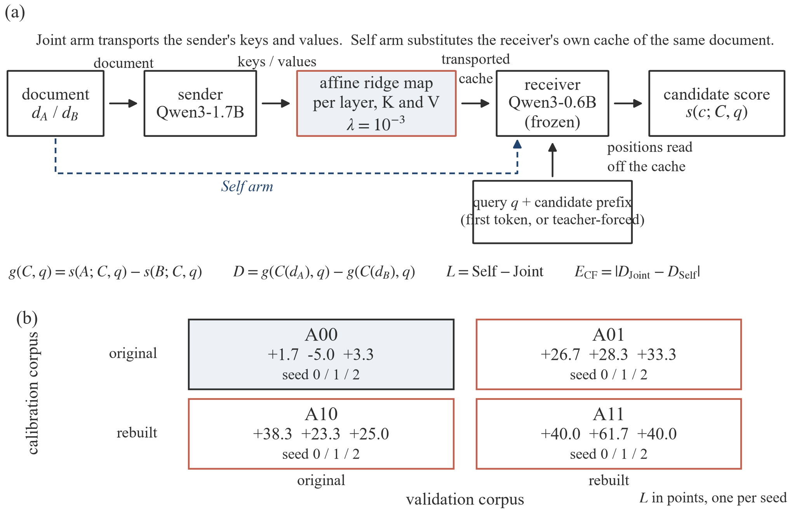
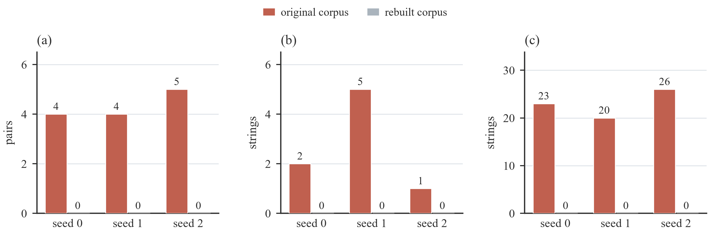

Six figures for “When a Benchmark Rebuild Reverses a Finding”. Every plotted value is read from
results.json / evaluation.json or recomputed from data/audit_2x2/;
verify_figures.py checks each one against the tables in results.tex and against the
counts stated in the paper text.
Fig 1 · problem setup

The cache path and the corpus-version design. (a) Sender keys and values are mapped per layer and injected into the frozen receiver, which sees only the query and the candidate prefix; the Self arm substitutes the receiver's own cache. (b) Original (0) and rebuilt (1) calibration and validation corpora crossed with three seeds, each cell annotated with L in points.
source: results.json → factorial[*].L
Fig 2 · corpus audit

What the audit removed. Identical candidates inside must-flip pairs, exact document strings shared across splits, and shared query strings — per seed, before and after the rebuild. Recomputed from the corpus files, and equal to the counts the paper states (4/4/5 and 2/5/1); the rebuilt corpus is clean on all three.
The reversal. (a) L with its template-family interval for each cell and seed; the historical diagonal A00 is shaded. (b) The native and transferred dual-correctness levels that produce each gap, so a gap that moves because Self moved is visible as such.
Does the direction survive another score? (a) L under first-token, full-sequence and length-normalised scoring. (b) The A11−A00 version contrast under each readout, seed by seed, with family intervals. The direction holds everywhere; the magnitude moves (seed 1 loses 21.7 points).
Error below the controls, correctness below the reference. (a) First-token ECF against mismatched, zero and randomised caches. (b) Pair-level margins DSelf vs DJoint; the diagonal is sign agreement, and the inset gives the numerator and denominator.
Where the gap lives. (a) L by slice, cell and seed; F1–F4 are semantic, F5 and F6 are controls excluded from the direction analysis. (b) Affine map against the distillation baseline on the rebuilt validation sets, with family intervals.